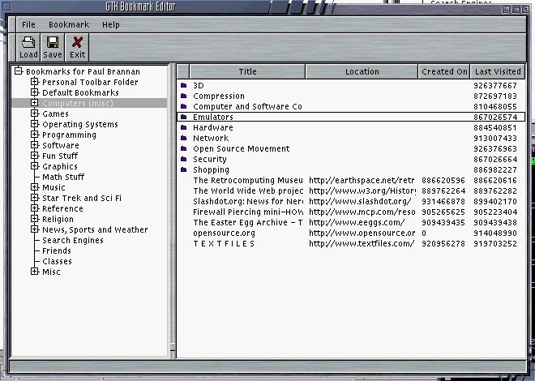

This is the home page for the GTK Bookmark Editor. It is a lightweight
utility for loading, modifying, and saving Netscape bookmark files. Currently,
it only works with Netscape version 4.0 bookmarks.
GTK Bookmark Editor 0.01
GTK Bookmark Editor 0.08
Screenshot:
